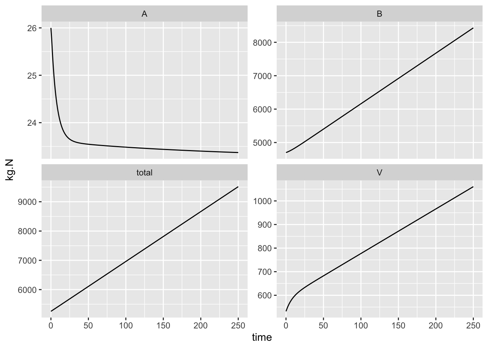

Calibration, in general, is the process of finding better estimates for our parameters. We can do that by looking into the literature, or by using independent data to estimates parameters directly.
If we take a look at the model output (above), we see both differences and similarities with Bormann et al. What are they?
What if we run it out longer, say, 100 years?
time <- 0:250
out <- ode(y = initial.state, times=time, func=bormann1, parms = params)
head(round(out,1))## time V A B total
## [1,] 0 532.0 26.0 4700.0 5258.0
## [2,] 1 540.8 25.8 4708.2 5274.7
## [3,] 2 548.8 25.5 4717.2 5291.5
## [4,] 3 556.0 25.2 4727.0 5308.3
## [5,] 4 562.6 25.0 4737.5 5325.1
## [6,] 5 568.6 24.8 4748.6 5342.0Use gather() and ggplot() to make a graph. We use gather() gather multiple columns into one with a new name (value=kg.N), keeping track of the names of the original columns in a new column (key=State.var). We can use spread() if we ever want to spread those columns back out.
outg <- gather(as.data.frame(out), key=State.var, value=kg.N,
V, A, B, total, -time,
factor_key=TRUE)
ggplot(outg, aes(x=time, y=kg.N)) + geom_line() + facet_wrap(~State.var, scale="free_y")Figure 3.3: Dynamics of a simple N budget, based on Bormann et al. (1977).
In some ways, we have been moderately successful in our first pass at converting a purely budgetary model into a dynamic process model. We mimicked total load, and see similar changes through time of all the state variables.
Questions to ponder
We replicated approximately the N budget of Bormann et al. (1977), but clearly vegetation cannot keep accumulating N indefinitely.
What are our next steps? One logical step is to assume that as vegetation eventually gets limited by some factor or resource that is not in our model. If, at first approximation, the vegetation reaches a carrying capacity independent of high resource availability, we can use an approximation suggested by Soetaert and Hermann (2009) for self-limitation, \[f(X)V\left(1-\frac{V}{K}\right)\] where \(f(X)\) is everything else that regulates mass-specific growth rate.
Exercise
Include self-limitation in your model of vegetation, estimate \(K\), and produce output.